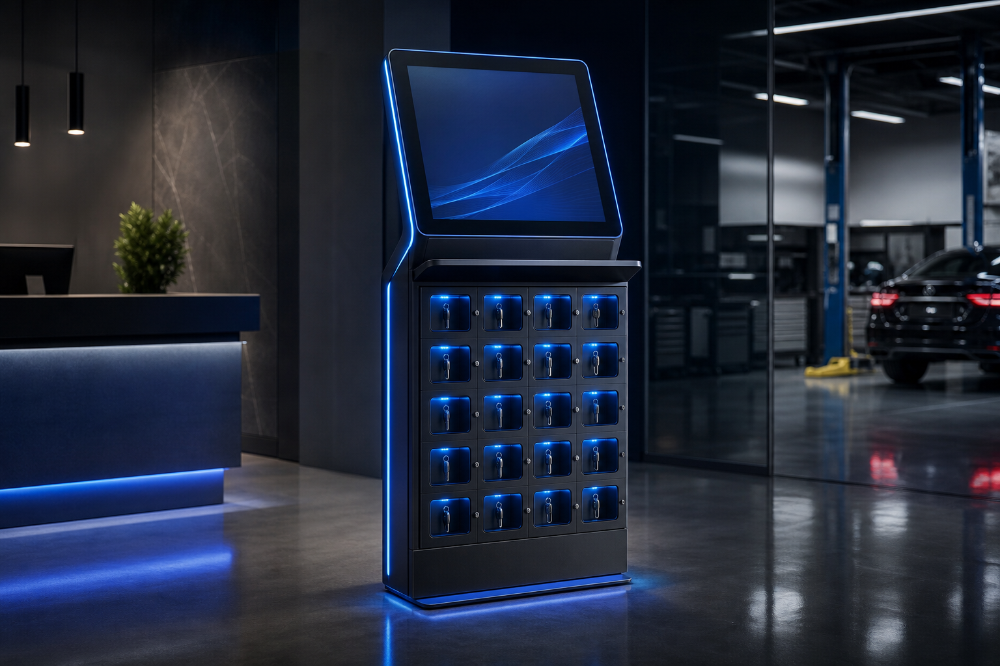
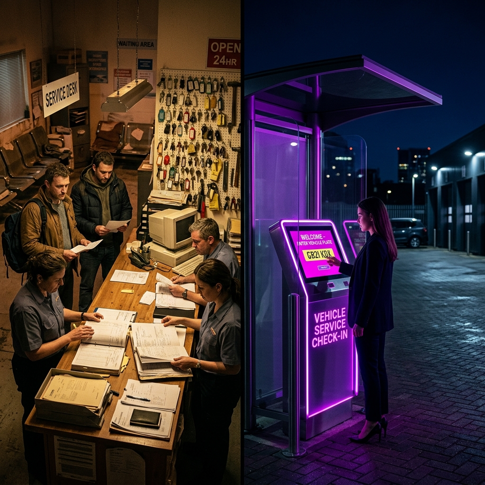
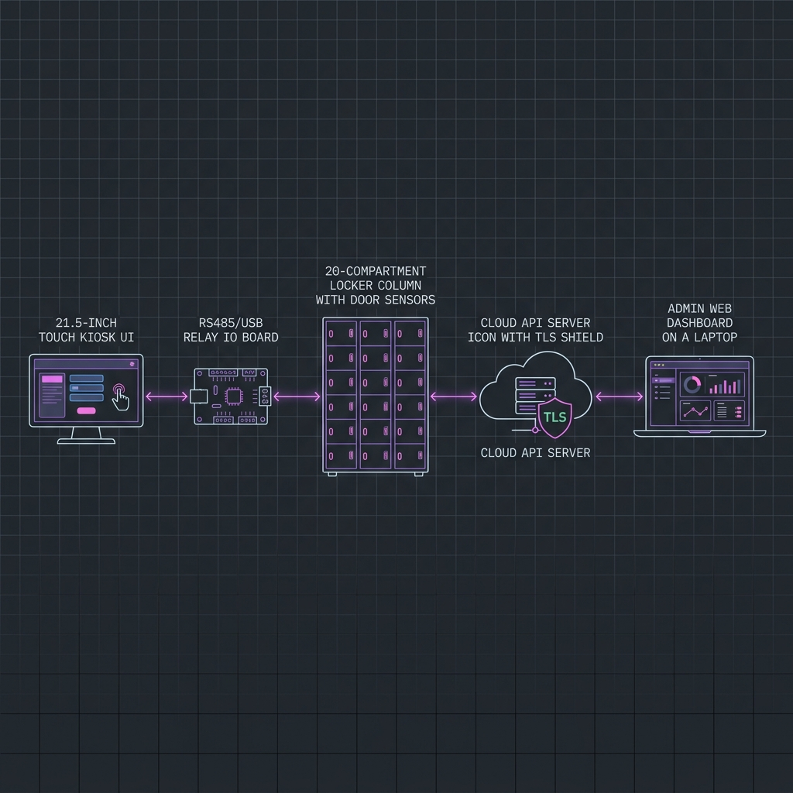
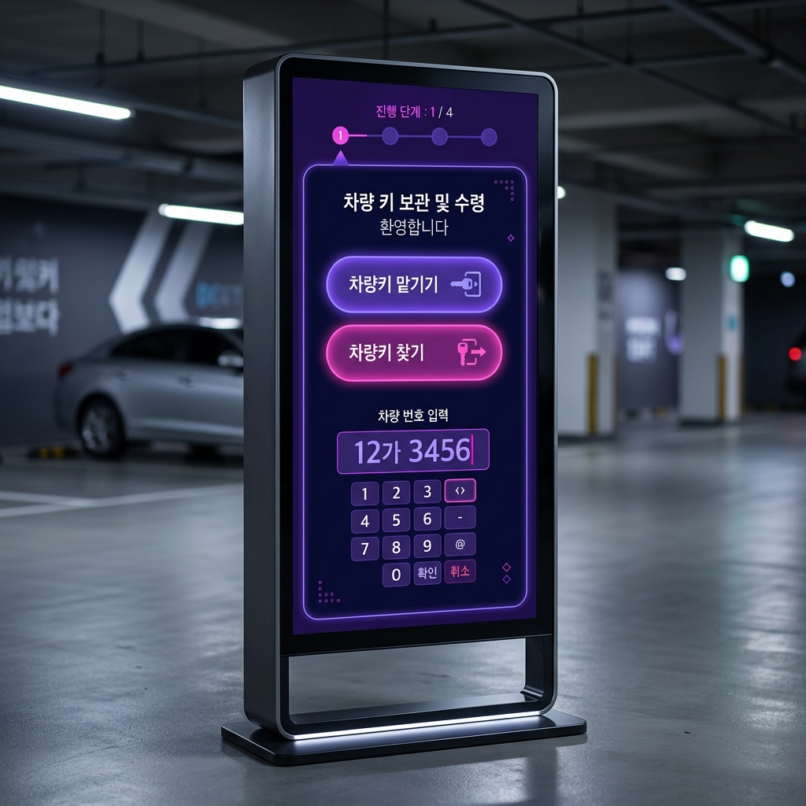
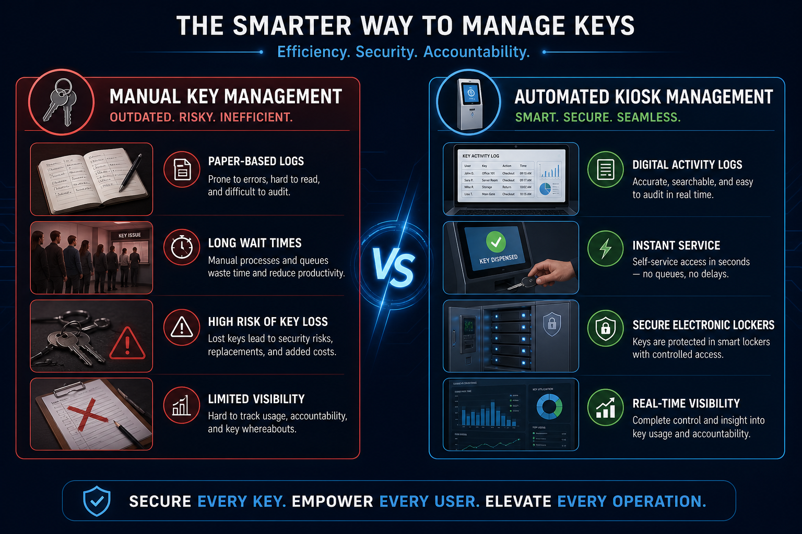
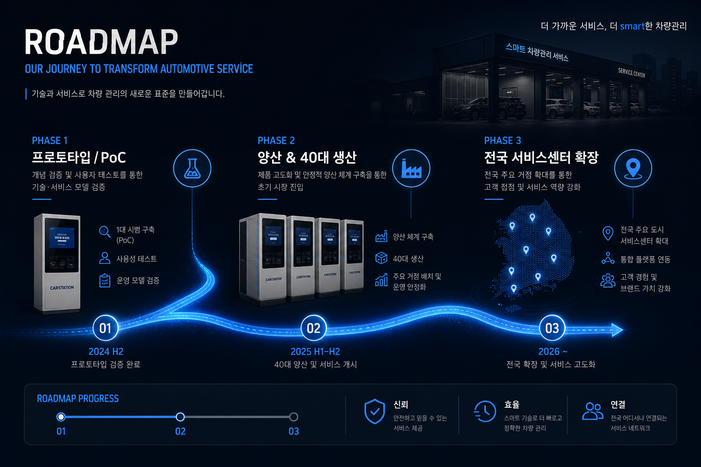
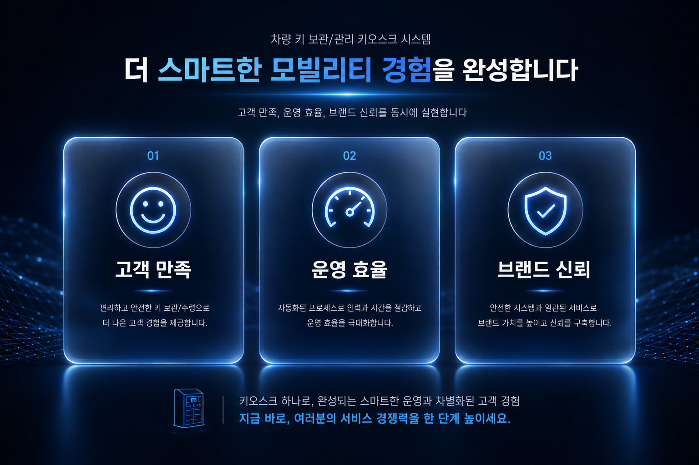

키 관리의 번거로움을 없애고,
고객 경험을 높이다
21.5인치 터치 디스플레이와 20구 보관함을 갖춘 스탠드형 무인 키오스크로 차량 대여·정비 현장의 키 인수인계를 24시간 자동화합니다. 클라우드 API 연동과 전자락·센서 기반 보관함 제어로 확장 가능한 키 관리 인프라를 제안합니다.

21.5인치 FHD 터치 × 20구 개별 전자락 보관함 × HTTPS 클라우드 API 연동. RS485 IO보드 또는 USB 릴레이보드로 보관함을 개별 제어합니다.
키 관리의 병목,
왜 자동화가 필요한가?
차량 대여·정비에서는 키 인수인계가 늘 병목입니다. 무인 시간에는 키를 맡길 방법이 없고, 바쁜 시간에는 열쇠 찾는 대기가 길어집니다. 수동 관리는 분실 위험과 관리 공수를 동시에 키웁니다.
인수인계 지연
직원·고객 동선이 겹치며 평균 대기 시간이 길어집니다.
분실·오류 위험
종이 기록과 수동 보관은 실수와 분실을 항상 동반합니다.

보관함 제어와
클라우드 서버 연동 구조
키오스크는 차량번호·비밀번호 입력 후 RS485/USB IO보드로 20개 보관함을 개별 제어합니다. 센서 데이터와 이용 이력은 HTTPS REST API / WebSocket으로 클라우드에 전송되며, 관리자 웹 대시보드에서 실시간 모니터링합니다.
각 노드를 클릭하여 데이터 흐름을 확인하세요.

차량키 맡기기·찾기
시나리오 체험
고객은 차량번호만으로 빈 보관함에 키를 맡기고, 정비 완료 후 문자로 받은 PIN으로 키를 찾습니다. 정비사는 차량번호 검색으로 보관함을 열어 작업 후 다시 보관할 수 있습니다.
단계별 안내
상단 진행 표시와 큰 버튼으로 초보자도 쉽게 이용
상태 동기화
키오스크·대시보드 동일 색상 규칙 (초록·주황·빨강)

수동 관리 vs.
자동화 키오스크
무인 키오스크는 전자락과 센서로 문 열림마다 로그를 남기고, 서버에서 상태를 실시간 관리합니다. 차량번호와 PIN만으로 키를 찾을 수 있어 대기 시간이 크게 줄어듭니다.
- 종이 기록 · 분실 위험
- 평균 대기 10~15분
- 무인 시간 서비스 불가
- 관리자 상주 필요
- 디지털 로그 · 전자락
- 즉시 개방 (1분 이내)
- 24시간 무인 운영
- 원격 모니터링·제어

시제품 PoC에서
전국 확장까지
1단계 시제품 PoC로 현장 검증 후, 2단계 40대 양산, 3단계 서비스센터·렌터카 업체 전국 확장을 제안합니다.
체크박스를 클릭하여 진척률을 시뮬레이션하세요.

무인 키오스크가 가져올
운영 방식의 전환
무인 키 보관함 키오스크는 단순 자동 장치가 아니라, 차량 서비스 운영 구조를 바꾸는 인프라입니다. 고객 편의, 직원 업무 효율, 관리자 원격 제어를 동시에 실현합니다.
고객 만족도 향상
24시간 키 보관·출고, 대기 시간 단축
운영 효율성 증대
키 관리 업무 감소, 원격 모니터링·장애 대응
브랜드 신뢰성 강화
분실·오류 최소화, TLS·이중 인증 보안 설계

21.5" 터치 UI와 20구 보관함 관리 대시보드를 시뮬레이션합니다.
- 선택 보관함
- —
- 상태
- —
- 차량번호
- —